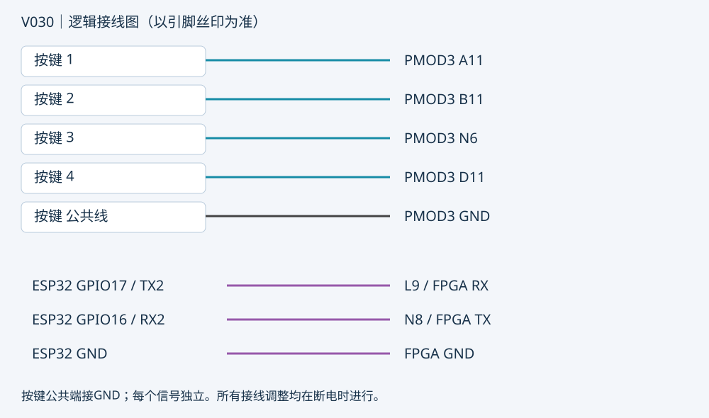

V030 已写入Flash，校验及Flash重载后UserCode验证通过。 UserCode 0x00003366。不要用电脑浏览器中打开的旧接线网页判断板上版本。
每页左上角显示 V030。旧S1～S16说明改成四键说明，底部始终显示 KEY1～KEY4。0表示释放，1表示已消抖的按下状态；这不是电压表，也不是未同步的原始引脚。
按键动作在松开后执行。长按不连发；多键同时按下会取消本次操作。上电先保持四键全部松开。若按1只有KEY1变1，输入对应正确；如果KEY1/KEY2一起变1，应继续隔离接线，不能靠关闭多键保护掩盖问题。
| 实体按键 | PMOD3引脚 | 功能 |
|---|---|---|
| 1 | A11 | 切换演奏/曲库/说明/诊断页 |
| 2 | B11 | 首次开始，随后暂停/继续 |
| 3 | N6 | 从头重播当前曲 |
| 4 | D11 | 选择下一首曲，等待按2开始 |
| 公共线 | GND | 四个常开开关共地；不接VCC |
按你对排线的实测，排除公共线后，四根信号线从左到右对应实体3、4、1、2，应依次接 N6、D11、A11、B11。以逐键通断结果为准。PMOD3与RGB LCD接口共用信号，暂不连接RGB LCD或其他PMOD3外设；板载HDMI仍可用。下图为逻辑连接，不代表实物排针左右顺序。

PMOD1疑似受损，不再接外设。手机信号迁移到PMOD3的L9/N8，不能与四个按键并联。
| ESP32-WROOM32 | FPGA PMOD3 | 方向 |
|---|---|---|
| GPIO17 / TX2 | L9 / phone_uart_rx | ESP32 → FPGA |
| GPIO16 / RX2 | N8 / phone_uart_tx | FPGA → ESP32 |
| GND | GND | 公共参考地 |
UART：115200、8N1、3.3V逻辑。ESP32用自己的USB供电；不并联双方3V3稳压输出。ESP32源码/协议未变，只移动FPGA侧串口引脚。
ESP32固件部署后，手机连接 Wi-Fi Tang20K-Music，密码 fpga2026，浏览器访问 http://192.168.4.1/。网页能打开不代表FPGA通信成功，要看到实际参数回读。
继承V024：手机参数控制、MIDI四旋钮FX、四Pad打击乐、黑白琴键和下落式提示。手机可切换HDMI页并读取当前页；四键专门操作界面与练习曲。触摸ADC菜单已停用。四旋钮依旧为CC93/91/71/74；实际键盘发送的CC及Pad通道需实测。
编译、时序、仿真记录随版本附带。真实按键、HDMI、手机Wi-Fi/UART仍需上板测试；V030已烧录FPGA并校验，ESP32未烧录。用户报告过烧灼，本次换口不能证明板卡恢复正常。有焦味或异常发热应停用。此前PCM5102A无声问题未宣称解决。
V029在V025基础上迁移按键至PMOD3并更新显示；V030在V024手机测试版基础上接入四键，按键与手机串口均使用PMOD3。V026是已停止的诊断草稿，不是本次可烧录版本。